전자계산기조직응용기사 (2012-03-04 기출문제)
1과목: 전자계산기 프로그래밍
1. 어셈블러를 두 개의 pass로 구성하는 주된 이유는?
- 한 개의 패스만을 사용하면 프로그램의 크기가 증가하여 유지 보수가 어렵기 때문에
- 한 개의 패스만을 사용하면 프로그램의 크기가 증가하여 처리 속도가 감소하기 때문에
- 한 개의 패스만을 사용하면 기호를 모두 정의한 뒤에 해당 기호를 사용해야만 하기 때문에
- 패스 1, 2의 어셈블러 프로그램이 작아서 경제적이기 때문에
(정답률: 27%)

2. 객체 지향 언어의 개념에서 하나 이상의 유사한 객체들을 묶어서 하나의 공통된 특성을 표현한 것은?
- Instance
- Method
- Message
- Class
(정답률: 83%)
3. 원시 프로그램을 하나의 긴 스트링으로 보고 원시 프로그램을 문자 단위로 스캐닝 하여 문법적으로 의미 있는 일련의 문자들로 분할해 내는 작업을 수행하는 것은?
- 어휘분석
- 구문분석
- 바인딩
- 정규표현
(정답률: 47%)
4. C 언어의 설명으로 옳지 않은 것은?
- 이식성이 높은 언어이다.
- 시스템 프로그래밍 언어로 적합하다.
- 인터프리터 기법을 사용한다.
- 많은 데이터형과 풍부한 연산자를 가지고 있다.
(정답률: 75%)
5. 매크로 기능에 대한 설명으로 가장 적합한 것은?
- 어셈블리 언어로 작성한 프로그램을 다른 컴퓨터의 기계어로 변환시키는 기능이다.
- 어셈블리 언어로 작성한 프로그램 내에 다른 고급 언어를 삽입할 수 있는 기능이다.
- 고급언어로 작성된 프로그램 내에0 어셈블리 언어의 문장 및 함수 등을 삽입시키는 기능이다.
- 어셈블리 프로그램에서 반복적으로 나타나는 코드들을 묶어 하나의 새로운 명령으로 정의시키는 기능이다.
(정답률: 86%)
6. 어셈블리언어에서 원시 프로그램을 목적 프로그램으로 번역할 때 현재의 오퍼랜드에 있는 값을 다음 명령어의 번지로 할당하는 것은?
- TITLE
- INCLUDE
- EVEN
- ORG
(정답률: 73%)
7. C 언어에서 문자열 입력 함수는?
- getcher()
- gets()
- putchar()
- puts()
(정답률: 72%)
8. C 언어에서 이스케이프 시퀀스의 설명이 옳지 않은 것은?
- ＼n : null character
- ＼t : tab
- ＼b : backspace
- ＼r : carriage return
(정답률: 79%)
9. 객체지향 기법에서 이미 정의된 상위 클래스(부모 클래스)의 모든 속성과 연산을 하위 클래스가 물려받는 것을 의미하는 것은?
- 적응성
- 상속성
- 정보은닉
- 캡슐화
(정답률: 82%)
10. 단항 연산자에 해당하는 것은?
- AND
- XOR
- OR
- NOT
(정답률: 75%)
11. C 언어에서프로그램의 변수 선언을 "int c;"로 했을 경우 "&c"는 어떤 의미인가?
- c의 절대값
- c에 저장된 값
- c의 기억장소 주소
- c의 범위
(정답률: 80%)
12. C 언어의 기억 클래스 중 “extern"을 사용하여 선언하는 변수는?
- 자동변수
- 정적변수
- 외부변수
- 레지스터변수
(정답률: 78%)
13. 서브루틴에서 자신을 호출한 곳으로 복귀시키는 어셈블리어 명령은?
- RET
- CALL
- LOOP
- NOP
(정답률: 65%)
14. BNF 표기법에서 정의를 나타내는 기호는?
- ==
- <>
- |
- ::=
(정답률: 71%)
15. 프로그램 수행 순서로 옳은 것은?
- 컴파일러 → 목적 프로그램 → 원시 프로그램
- 원시 프로그램 → 목적 프로그램 → 컴파일러
- 원시 프로그램 → 컴파일러 → 목적 프로그램
- 목적 프로그램 → 원시 프로그램 → 컴파일러
(정답률: 82%)
16. 어셈블리어에 대한 설명으로 옳지 않은 것은?
- 명령 기능을 쉽게 연상할 수 있는 기호를 기계어와 1:1로 대응시켜 코드화한 기호 언어이다.
- 프로그램에 기호화된 명령 및 주소를 사용한다.
- 어셈블리어로 작성된 원시 프로그램은 목적 프로그램을 생성하지 않아도 실행 가능하다.
- 어셈블리어의 기본 동작은 동일하지만 작성한 CPU마다 사용되는 어셈블리어가 다를 수 있다.
(정답률: 73%)
17. C 언어에서 정수형 변수 선언 시 사용하는 것은?
- float
- long
- char
- int
(정답률: 71%)
18. 고수준 언어로 작성된 원시 프로그램을 컴퓨터 주메모리에 적재해 두고, 그 중 한 명령문씩 꺼내어 이를 해석기에서 중간어로 전환하여 곧바로 실행시키는 것은?
- Loader
- Linker
- Compiler
- Interpreter
(정답률: 75%)
19. C 언어에서 정수형 변수 a에 256이 저장되어 있다. 이를 7자리로 잡아 왼쪽으로 붙여 출력하고자 할 경우 printf() 내의 변환문자 사용으로 옳은 것은?
- %7f
- %-7d
- %7d
- %7s
(정답률: 62%)
20. 어셈블리어에서 논리적인 비교와 결과가 양수 또는 음수인지를 검사하여 상태 레지스터의 상태 비트를 설정하는 명령은?
- TEST
- NEG
- CWD
- LEA
(정답률: 52%)
2과목: 자료구조 및 데이터통신
21. IP 주소로부터 물리적 주소로 변환하는 프로토콜은?
- ARP
- RARP
- ICMP
- DNS
(정답률: 67%)
22. 디지털 데이터를 아날로그 신호로 부호화(encoding)하는 방식은?
- PSK
- MRZ
- FM
- PM
(정답률: 60%)
23. HDLC의 ABM의 부분집합으로 X.25의 링크 계층에서 사용되는 프로토콜은?
- LAPB
- LAPD
- LAPX
- LAPM
(정답률: 52%)
24. 점-대-점 링크뿐만 아니라 멀티 포인트 링크를 위하여 ISO에서 개발한 국제 표준프로토콜은?
- HDLC(High Data Link Control)
- BSC(Binary Synchronous Control)
- SWFC(Sliding Window Flow Control)
- LLC(Logic Link Control)
(정답률: 65%)
25. 망(network) 구조의 기본 유형이 아닌 것은?
- 버스형
- 링형
- 트리형
- 십자형
(정답률: 75%)
26. OSI 7계층에서 다음과 같은 서비스를 제공하는 계층은?
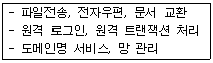
- 데이터 링크 계층
- 물리 계층
- 응용 계층
- 세션 계층
(정답률: 67%)
27. 주파수 분할 방식의 특징으로 틀린 것은?
- 사람의 음성이나 데이터가 아날로그형태로 전송된다.
- 인접채널 사이의 간섭을 막기 위해 보호대역을 둔다.
- 터미널의 수가 동적으로 변할 수 있다.
- 주로 유선방송에서 많이 사용하고 있다.
(정답률: 45%)
28. 다음 인터넷 도메인의 설명 중 옳지 않은 것은?
- www : 호스트 컴퓨터이름
- hankook : 소속 기관
- co : 소속 기관의 서버이름
- kr : 소속 국가
(정답률: 62%)
29. 무선 LAN의 매체 접근 제어 방식 중 경쟁에 의해 채널 접근을 제어하는 것은?
- PSK
- ASK
- DCF
- PCF
(정답률: 52%)
30. 다음 설명에 해당되는 ARQ 방식은?
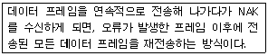
- Stop-and-Wait ARQ
- Selective-Repeat ARQ
- Go-back-N ARQ
- Sequence-Number ARQ
(정답률: 71%)
31. 3단계 스키마에 해당하지 않는 것은?
- 내부 스키마
- 외부 스키마
- 관계 스키마
- 개념 스키마
(정답률: 75%)
32. 다음 설명과 관계되는 트랜잭션의 특성은?
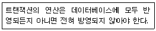
- Isolation
- Consistency
- Atomicity
- Durability
(정답률: 73%)
33. 다음 그림에서 Tree의 디그리는?
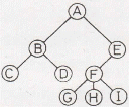
- 1
- 2
- 3
- 4
(정답률: 75%)
34. 다음 자료에 대하여 버블 정렬을 이용하여 오름차순으로 정렬할 경우 1회전 후의 결과는?
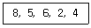
- 4, 2, 5, 6, 8
- 2, 4, 5, 6, 8
- 5, 2, 4, 6, 8
- 5, 6, 2, 4, 8
(정답률: 77%)
35. DBMS의 필수기능이 아닌 것은?
- 관리 기능
- 정의 기능
- 조작 기능
- 제어 기능
(정답률: 70%)
36. 큐(Queue)에 대한 설명으로 옳지 않은 것은?
- 자료의 삽입과 삭제가 Top에서 이루어진다.
- FIFO 방식으로 처리한다.
- Front와 Real의 포인터 2개를 갖고 있다.
- 운영체제의 작업 스케줄링시 사용된다.
(정답률: 67%)
37. 데이터베이스관리자(DBA)의 역할로 거리가 먼 것은?
- 응용 프로그램의 개발 및 분석
- DBMS 시스템 자원의 이용도 분석
- 데이터 표현 및 문서화의 표준 설정
- 데이터베이스 설계 및 조작
(정답률: 73%)
38. 다음 트리를 "Pre-Order"로 운행한 결과는?
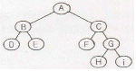
- A B D E C F G H i
- D B E F C H G i A
- A B C D E F G H i
- D E B F H i G C A
(정답률: 75%)
39. 색인 순차 파일(Indexed Sequential File)에서 색인영역(indexed Area)의 구성이 아닌 것은?
- 트랙 색인(track area) 영역
- 실린더 색인(cylinder area) 영역
- 마스터 색인(master area) 영역
- 오버플로우 색인(overflow area) 영역
(정답률: 77%)
40. 선형리스트(linear list)에 해당하지 않는 자료 구조는?
- stack
- queue
- tree
- deque
(정답률: 79%)
3과목: 전자계산기구조
41. propagation delay에 대한 설명으로 옳지 않은 것은?
- gate상의 operating speed는 propagation delay에 비례한다.
- carry propagation은 ALU(arithmetic logic unit)path에서 가장 긴 delay를 말한다.
- 더 빠른 gate를 사용함으로써 propagation delay time을 줄일 수 있다.
- ALU의 parallel-adder에 carry propagation을 줄이기 위해 carry lock ahead를 사용한다.
(정답률: 33%)
42. 다중처리기에 대한 설명으로 옳지 않은 것은?
- 수행속도의 성능 개선이 목적이다.
- 하나의 복합적인 운영체제에 의하여 전체 시스템이 제어된다.
- 각 프로세서의 기억장치만 있으며 공유 기억장치는 없다.
- 프로세서들 중 하나가 고장나도 다른 프로세서들에 의해 고장난 프로세서의 작업을 대신 수행하는 장애극복이 가능하다.
(정답률: 45%)
43. 인터럽트에 관한 설명으로 옳은 것은?
- 인터럽트가 발생했을 때 CPU의 상태는 보존하지 않아도 된다.
- 인터럽트가 발생하게 되면 CPU는 인터럽트 사이클이 끝날 때까지 동작을 멈춘다.
- 인터럽트 서비스 루틴을 실행할 때 인터럽트 플래그(IF)를 0으로 하면 인터럽트 발생을 방지할 수 있다.
- 인터럽트 서비스 루틴 처리를 수행한 후 이전에 수행 중이던 프로그램의 처음상태로 복귀한다.
(정답률: 36%)
44. CPU에 의해 참조되는 각 주소는 가상주소를 주기억장치의 실제주소로 변환하여야 한다. 이것을 무엇이라 하는가?
- mapping
- blocking
- buffering
- interleaving
(정답률: 63%)
45. 짝수 패리티 비트의 해밍 코드로 0011011을 받았을 때 오류가 수정된 정확한 코드는?
- 0111011
- 0001011
- 0011001
- 0010101
(정답률: 42%)
46. 레지스터에 대한 설명으로 틀린 것은?
- 레지스터는 워드를 구성하는 비트 개수만큼의 플립플롭으로 구성된다.
- 여러 개의 플립플롭은 공통 클록의 입력에 의해 동시에 여러 비트의 입력 자료가 저장된다.
- 레지스터에 사용되는 플립플롭은 외부입력을 그대로 저장하는 T 플립플롭이 적당하다.
- 레지스터를 구성하는 플립플롭은 저장하는 값을 임의로 설정하기 위해 별도의 입력단자를 추가할 수 있으며, 저장값을 0 으로 하는 것을 설정해제(CLR)라 한다.
(정답률: 58%)
47. 중앙 연산 처리장치의 하드웨어적인 요소가 아닌 것은?
- IR
- MAR
- MODEM
- PC
(정답률: 65%)
48. 1의 보수로 음수를 표현하는 방식에 비하여 2의 보수로 음수를 표현하는 방식의 특징으로 옳은 것은?
- 디지털 장치에서 음수화 구현이 쉽지 않다.
- 연산과정이 간단하다.
- 0 이 두 개이다.
- 4비트로 수를 표현하면 -7 ~ +7 범위의 수를 표현할 수 있다.
(정답률: 44%)
49. 하드웨어의 특성상 주기억장치가 제공할 수 있는 정보 전달의 능력 한계를 무엇이라 하는가?
- 주기억장치 대역폭
- 주기억장치 접근율
- 주기억장치 접근 실패
- 주기억장치 사용의 편의성
(정답률: 62%)
50. 다음 중 cycle stealing과 관계있는 것은?
- memory-maooed I/O
- isolated I/O
- interrupt-driven I/O
- DMA
(정답률: 45%)
51. 256×8 RAM 소자를 이용해서 2Kbyte의 용량을 갖는 메모리를 구성하려고 한다. 필요한 RAM 소자의 개수는?
- 8개
- 16개
- 24개
- 32개
(정답률: 41%)
52. 반감산기에서 차를 얻기 위하여 사용하는 게이트는 EX-OR이다. 이 EX-OR와 같은 기능을 수행하기 위하여 필요한 게이트를 조합할 때, 필요한 게이트와 개수는?
- NOR Gate, 3개
- NAND gate, 5개
- OR Gate, 6개
- AND Gate, 6개
(정답률: 48%)
53. 다음은 DMA의 데이터 전송 절차를 나열한 것이다. 순서가 옳은 것은?
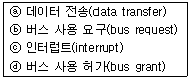
- ⓐ→ⓑ→ⓒ→ⓓ
- ⓒ→ⓑ→ⓓ→ⓐ
- ⓑ→ⓓ→ⓐ→ⓒ
- ⓓ→ⓒ→ⓑ→ⓐ
(정답률: 45%)
54. 프로그램이 가능한 논리소자로, n개의 입력에 대하여 개 이하의 출력을 만들 수 있는 논리회로는?
- RAM
- ROM
- PLA
- pipeline register
(정답률: 64%)
55. 하드웨어 신호에 의하여 특정 번지의 서브루틴을 수행하는 것을 무엇이라 하는가?
- DMA
- vectored interrupt
- subroutine call
- handshaking mode
(정답률: 49%)
56. DMA(Direct Memory Access) 과정에서 인터럽트가 발생하는 시점은?
- DMA가 메모리 참조를 시작할 때
- DMA 제어기가 자료 전송을 종료 했을 때
- 중앙처리장치가 DMA 제어기를 초기화 할 때
- 사이클 훔침(cycle stealing)이 발생하는 순간
(정답률: 42%)
57. 다음 그림은 입출력 시스템의 구성도이다.
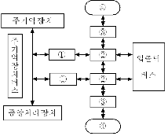
- 입출력 제어기, 입출력 장치제어기, 인터페이스, 입출력 장치
- 입출력 장치제어기, 입출력 제어기, 인터페이스, 입출력 장치
- 입출력 제어기, 인터페이스, 입출력 장치제어기, 입출력 장치
- 인터페이스, 입출력 장치제어기, 입출력 제어기, 입출력 장치
(정답률: 39%)
58. 플립플롭이 가지고 있는 기능은?
- 전송 기능
- 기억 기능
- 증폭 기능
- 전원 기능
(정답률: 58%)
59. 어떤 computer의 메모리 용량은 1024 word이고 1 word는 16 bit로 구성되어 있다면 MAR과 MBR은 최소 몇 bit로 구성되어 있는가?
- MAR=10, MBR=8
- MAR=10, MBR=16
- MAR=11, MBR=8
- MAR=11, MBR=16
(정답률: 68%)
60. 명령어 파이프라이닝을 사용하는 목적은?
- 기억용량 증대
- 메모리 액세스의 효율증대
- CPU의 프로그램 처리속도 개선
- 입출력 장치의 증설
(정답률: 55%)
4과목: 운영체제
61. 분산 처리 운영체제 시스템을 설계하는 주된 이유가 아닌 것은?
- 신뢰도 향상
- 자원 공유
- 보안의 향상
- 연산 속도 향상
(정답률: 70%)
62. 디스크 스케줄링의 목적과 거리가 먼 것은?
- 처리율 극대화
- 평균 반응 시간의 단축
- 응답시간 편차의 최소화
- 디스크 공간 확보
(정답률: 55%)
63. UNIX에서 현재 디렉토리 내의 파일 목록을 확인하는 명령어는?
- ls
- cat
- fcsk
- cp
(정답률: 68%)
64. 메모리 관리 기법 중 Worst fit 방법을 사용할 경우 10K 크기의 프로그램 실행을 위해서는 어느 부분이 할당되는가?
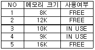
- NO. 2
- NO. 3
- NO. 4
- NO. 5
(정답률: 62%)
65. 일정량 또는 일정 기간 동안 데이터를 한꺼번에 모아서 처리하는 운영체제의 운영 기법은?
- 일괄 처리 시스템
- 다중 프로그래밍 시스템
- 시분할 시스템
- 실시간 처리 시스템
(정답률: 70%)
66. 다중 처리기 운영체제 형태 중 주/종(Master/Slave) 처리기에 대한 설명으로 틀린 것은?
- Slave 만이 운영체제를 수행할 수 있다.
- Master에 문제가 발생하면 입출력 작업을 수행할 수 없다.
- 비대칭 구조를 갖는다.
- 하나의 처리기를 Master로 지정하고 다른 처리기들은 Slave로 지정한다.
(정답률: 61%)
67. 운영체제의 성능 평가 기준과 거리가 먼 것은?
- Throughout
- Reliability
- Integrity
- Turn Around Time
(정답률: 44%)
68. 프로세스 내에서의 작업 단위로서 시스템의 여러 자원을 할당받아 실행하는 프로그램의 단위를 의미하는 것은?
- Thread
- Working Set
- Semaphore
- Monitor
(정답률: 55%)
69. 프로세스의 정의와 거리가 먼 것은?
- 프로세서가 할당되는 실체
- PCB를 가진 프로그램
- 프로시저가 활동 중인 것
- 동기적 행위를 일으키는 주체
(정답률: 56%)
70. 파일 시스템의 기능이 아닌 것은?
- 파일의 생성, 변경, 제거
- 파일에 대한 여러 가지 접근 제어 방법 제공
- 정보 손실이나 파괴를 방지하기 위한 기능
- 고급 언어로 작성된 원시 프로그램의 번역
(정답률: 66%)
71. 교착상태의 해결 방법 중 점유 및 대기 조건 방지, 비선점 조건 방지, 환형 대기 조건 방지와 가장 밀접한 관계가 있는 것은?
- Prevention
- Avoidance
- Detection
- Recovery
(정답률: 58%)
72. UNIX에서 커널에 대한 설명으로 틀린 것은?
- UNIX 시스템의 중심부에 해당한다.
- 사용자의 명령을 수행하는 명령어 해석기이다.
- 프로세스 관리, 기억장치 관리 등을 담당한다.
- 컴퓨터 부팅시 주기억장치에 적재되어 상주하면서 실행된다.
(정답률: 59%)
73. 파일 디스크립터(File Descriptor)에 대한 설명으로 틀린 것은?
- 파일 디스크립터의 내용에는 파일의 ID 번호, 디스크 내 주소, 파일 크기 등에 대한 정보가 수록된다.
- 파일이 엑세스되는 동안 운영체제가 관리 목적으로 알아야 할 정보를 모아 놓은 자료구조이다.
- 해당 파일이 Open되면 FCB(File Control Block)가 메모리에 올라와야 한다.
- 모든 시스템에 동일한 자료구조를 갖는다.
(정답률: 67%)
74. 분산 운영체제의 구조 중 다음 설명에 해당하는 것은?
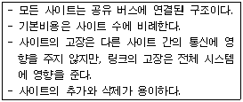
- Multi-access Bus Connection
- Hierarchy Connection
- Star Connection
- Ring Connection
(정답률: 60%)
75. NUR(Not-Used-Recently) 페이지 교체방법에서 가장 우선적으로 교체 대상이 되는 것은?
- 참조되고 변형된 페이지
- 참조는 안 되고 변형된 페이지
- 참조는 되었으나 변형 안 된 페이지
- 참조도 안 되고 변형도 안 된 페이지
(정답률: 57%)
76. 어셈블러를 두 개의 패스(pass)로 구성하는 주된 이유는?
- 한 개의 패스만을 사용하면 프로그램의 크기가 증가하여 유지보수가 어렵기 때문
- 한 개의 패스만을 사용하면 프로그램의 크기가 증가하여 처리속도가 감소하기 때문
- 한 개의 패스만을 사용하면 기호를 모두 정의한 뒤에 해당 기호를 사용해야만 하기 때문
- 패스 1, 2의 어셈블러 프로그램이 작아서 경제적이기 때문
(정답률: 52%)
77. 4개의 페이지를 수용할 수 있는 주기억장치가 있으며, 초기에는 모두 비어 있다고 가정한다. 다음의 순서로 페이지 참조가 발생할 때, LRU 페이지 교체 알고리즘을 사용할 경우 몇 번의 페이지 결함이 발생하는가?
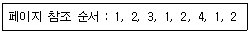
- 3
- 4
- 5
- 6
(정답률: 47%)
78. UNIX 파일 시스템 구조에서 디렉토리별 디렉토리 엔트리와 실제 파일에 대한 데이터가 저장된 블록은?
- I-node 블록
- 슈퍼 블록
- 부트 블록
- 데이터 블록
(정답률: 28%)
79. 다음 설명에 해당하는 디렉토리 구조는?
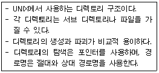
- 비순환 그래프 디렉토리 구조
- 1단계 디렉토리 구조
- 트리 디렉토리 구조
- 2단계 디렉토리 구조
(정답률: 53%)
80. HRN(Highest Response Scheduling) 스케줄링 기법에서 우선순위 결정 방법은?
- (대기시간 + 서비스 시간) / 대기시간
- (대기시간 + 서비스 시간) / 서비스시간
- 대기시간 / (대기 시간 + 서비스 시간)
- 서비스 시간 / 본문 (대기 시간 + 서비스 시간)
(정답률: 56%)
5과목: 마이크로 전자계산기
81. 신호(signal)가 Low라면 모뎀 또는 데이터 셋이 UART와 통신을 성립할 준비가 되어 있음을 의미하는 것은?
- TXD
- nDSR
- nRI
- nDCD
(정답률: 56%)
82. 동기형 계수기로 사용할 수 없는 것은?
- 리플 카운터
- BCD 카운터
- 2진 카운터
- 2진 업다운 카운터
(정답률: 58%)
83. 화상회의에서 사용되는 압축부호화 방식의 표준으로 p×64kbps (p = 1~30)의 전송 속도를 가지는 것은?
- H.261
- JPEG
- MPEG
- DSP
(정답률: 54%)
84. 마이크로컴퓨터와 외부장치 간에 적외선을 이용하여 데이터를 주고받는 방식은?
- 블루투스(Bluetooth)
- IrDA
- USB
- IEEE1394
(정답률: 49%)
85. 마이크로프로세서는 클록(Clock)에 의해 제어된다. 이 클록을 발생하는 회로는?
- 수정발진
- LC발진
- RC발진
- 마이크로발진
(정답률: 53%)
86. 동기식 비트 직렬 전송의 동작 순서로 옳은 것은?
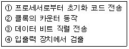
- ②-①-③-④
- ①-③-④-②
- ①-④-②-③
- ④-①-③-②
(정답률: 47%)
87. IEE 488 버스에 대한 설명 중 틀린 것은?
- 16 Single line로 구성되어 있다.
- 3 line의 전송 제어선은 기기의 데이터 입출력 시에 handshaking 하는데 사용된다.
- sereal data 전송에 적합하다.
- GPIB라고도 하며 시스템간 통신에 많이 사용된다.
(정답률: 47%)
88. CPU가 무엇을 하고 있는가를 나타내는 상태를 무엇이라 하는가?
- fetch state
- major state
- stable state
- unstable state
(정답률: 60%)
89. 마이크로프로세서의 주요 구성블록으로 볼 수 없는 것은?
- ALU
- 제어부
- 레지스터부
- 주기억장치
(정답률: 53%)
90. 최근 마이크로컴퓨터의 병렬 포트 표준 모드 중 고속 DMA 전송을 할 수 있도록 지원하는 모드는?
- SPP(Standard Parallel Port)
- Byte
- EPP(Enhanced Parallel Port)
- ECP(Extended Capability Port)
(정답률: 35%)
91. 서브루틴을 수행하기 위해 사용되는 것은?
- Stack
- Queue
- Linked list
- Array
(정답률: 57%)
92. 인출 사이클(fetch cycle)에서 active low로 되지 않는 신호는? (단, Z80 기준)
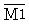
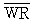
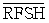
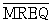
(정답률: 46%)
93. 마이크로프로그램 제어 방식의 특징이 아닌 것은?
- 제어 신호를 위한 마이크로 명령어를 저장한다.
- 제어 내용을 변경하기가 쉽다.
- 유지, 보수서이 좋다.
- 속도가 빠르다.
(정답률: 47%)
94. CMOS RAM의 설명으로 옳지 않은 것은?
- 상보성 금속 산화막 반도체 제조 공법을 사용한다.
- 전원으로부터의 잡음에 대한 허용도가 낮다.
- 전력 소비랑이 낮다.
- 건전지로 전원이 공급되는 하드웨어 구성 요소에 유용하게 사용된다.
(정답률: 54%)
95. 다음 중 I/O 버스를 통하여 접수된 command에 대한 해석이 이루어지는 곳은?
- 커맨더 디코더
- 상태 레지스터
- 버퍼 레지스터
- 인스트럭션 레지스터
(정답률: 65%)
96. JTAG(Joint Test Action Group) 인터페이스에서 핀으로 칩 안에 구성되지 않는 것은?
- TDI(데이터 입력)
- TMS(모드)
- TTS(전송)
- TRST(리셋)
(정답률: 34%)
97. 하나의 서브루틴 속에 존재하는 또 하나의 서브루틴, 즉, 서로 다른 서브루틴 중에서 호출되는 서브루틴을 무엇이라 하는가?
- Nested Subroutine
- Open Subroutine
- Closed Subroutine
- Cross Subroutine
(정답률: 44%)
98. PLA의 프로그래밍에 대한 설명으로 옳은 것은?
- AND와 OR 배열 모두를 프로그래밍 할 수 있다.
- AND 배열만 프로그래밍 한다.
- OR 배열만 프로그래밍 한다.
- 프로그래밍을 할 필요가 없다.
(정답률: 60%)
99. 4개의 플립플롭으로 구성한 4비트 리플카운터(ripple counter)는 입력 주파수를 어떤 주파수의 파형으로 변환하는가?
- 1/4 주파수의 파형
- 1/8 주파수의 파형
- 1/16 주파수의 파형
- 1/32 주파수의 파형
(정답률: 63%)
100. 제어논리가 마이크로프로그램 기억 장치인 읽기용 기억 장치(ROM)에 구성되어 있어, 여러 대규모 집적회로군이 이미 마이크로프로그램 되어 있는 것은?
- 가상 CPU
- 슈퍼 워크스테이션
- 슈퍼 VHS
- 쇼트키 쌍극형 마이크로컴퓨터 세트
(정답률: 60%)